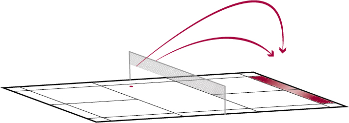

Badminton – Schlagtechnik
Lob Rückhand
Der offensive Lob Rückhand hat zum Ziel, den Gegner im Hinterfeld unter Druck zu setzen. Der defensive Lob Rückhand verschafft dem Spieler Zeit, um wieder in eine gute Position für den nächsten Schlag zu kommen.
Bemerkung: Weitere Perspektiven stehen in der Playlist zur Verfügung (Menu oben links).
Wohin fliegt der Shuttle?
- Lobs fliegen vom Vorderfeld ins Hinterfeld.
- Offensive Lobs fliegen knapp über die Reichweite des Gegners, defensive deutlich über dessen Reichweite.
Wann wird der Schlag gebraucht?
Wenn der Spieler den Shuttle im Vorderfeld unterhalb der Netzkante spielen muss und das gegnerische Hinterfeld anspielen möchte.
Welches sind die wichtigsten Merkmale des Schlags?
Ausgangsposition
- Rückhandgriff.
- Schlagfläche ist nahe am erwarteten Treffpunkt.
- Leicht gebeugter Ellbogen.
- Leichter Winkel zwischen Unterarm und Racketschaft.
Ausholphase
- Passives Ausholen durch Vorbringen und Heben des Ellbogens (Pronation im Oberarm).
- Alternative: Aktives Ausholen durch Unterarmpronation.
Schlagphase
- Schnellkräftige Unterarmsupination.
- Zupacken des Griffs (Fingerpower).
- Treffpunkt unterhalb der Netzkante (beim offensiven Lob möglichst hoch) vor dem Körper.
Ausschwungphase
- Bewegung wird noch etwas in Schlagrichtung fortgesetzt.
Quelle: Richard, Th. et al. (2016). Badminton: Lauf- und Schlagtechnik. Magglingen: Bundesamt für Sport BASPO.
Quelle: Mobilesport.ch - Badminton Lauf und Schlagtechnik